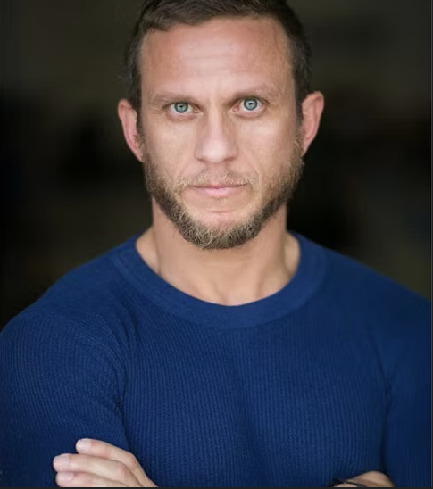

Todor "Juji" Lazarov

The Master of Execution
I’m Todor Lazarov Juji — a stuntman, actor, and stunt coordinator from Bulgaria. You’ve seen my work in Troy, Zero Dark Thirty, and The Expendables 2. I don’t just perform action — I build it, shape it, and execute it with precision.
My craft spans horses, high falls, full burns, sword fighting, and rigging. I thrive where risk meets control. When it comes to fight choreography, there’s no hesitation — only execution.
15x
Bulgarian Champion (Judo/Sambo)
2x
World/Euro 3rd Place